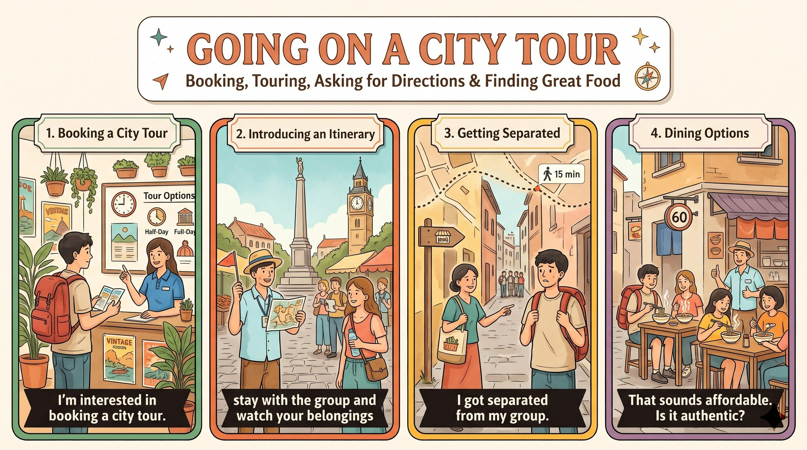

想認識新城市的旅客常選擇導覽；旅行社多有半日與全日方案，每人約 40 到 50 美元。
half-day and full-day options行程通常包含舊城區與紀念碑等古蹟；出發前導遊會提醒跟緊隊伍、看好財物、不碰文物。
watch their belongings仍有遊客會走散。專家建議先存導遊電話，迷路時問當地人並留意路標，就能很快跟上。
get separated from their groups許多導覽以經營數十年的老店收尾，料理道地又實惠，讓遊客滿懷感謝地結束旅程。
authentic and affordablea guided city tour (S) + is (V) + a popular choice (C)；句首 For 介系詞片語。
be interested in + V-ing；guided tour＝有導遊帶的導覽；choice 可數。
For travelers（介系詞片語（對象））who are interested in learning about a new city,（who 形容詞子句）a guided city tour is a popular choice.（主幹）語塊 1 開頭（對）➔ 語塊 2 前置（想認識新城市的）➔ 語塊 1 尾（旅客來說）➔ 語塊 3（有導遊帶領的城市導覽是熱門選擇）
句首 For travelers 是對象，中文先翻「對……的旅客來說」。
逗號後主幹順翻：「有導遊帶領的城市導覽是熱門選擇」。
For + 人, ...＝對某人來說；同義 To + 人。For people who ..., X is a popular choice.Most tourist agencies (S) + offer (V) + half-day and full-day options (O)，and 接 the price (S) + is usually (V) + affordable (C)。
agency（旅行社）；affordable（實惠的）；roughly＝about。
Most tourist agencies offer half-day and full-day options,（子句一）and the price is usually affordable,（and 子句二）roughly $40 to $50 per person.（補充片語）語塊 1（多數旅行社提供半日與全日方案）➔ 語塊 2（價格通常也很實惠）➔ 語塊 3 單位提前（每人大約 40 到 50 美元）
兩個子句照順序翻。
agency（機構）／agent（專員）；affordable ↔ expensive。..., roughly + 數字 + per person.A typical itinerary (S) + includes (V) + historical sites (O)；such as 舉例，where 子句補充。
itinerary（行程）；such as＝例如；where＝in which，後接完整句。
A typical itinerary includes historical sites（主幹）such as old towns and monuments,（舉例片語）where guides explain the stories behind each place.（非限定 where 子句）語塊 1 前半（典型的行程包括）➔ 語塊 2 提前（舊城區和紀念碑等）➔ 語塊 1 尾（歷史古蹟）➔ 語塊 3 另起（導遊會在那裡講解每個地方背後的故事）
主幹先翻「典型的行程包括……歷史古蹟」。
where＝介系詞＋which：the sites at which guides explain ......, where visitors can ...，一句話同時交代地點與活動。guides (S) + often remind (V) + visitors (O) + to stay ... and watch ... (OC)；句首 Before departure。
remind sb to V（提醒某人做……）；departure（出發）；belongings 恆複數。
Before departure,（時間片語）guides often remind visitors（主幹（remind sb））to stay with the group and watch their belongings（受詞補語（兩個不定詞））in crowded markets.（地點片語）語塊 1（出發前）➔ 語塊 2（導遊常會提醒遊客）➔ 語塊 3 前半（要跟緊隊伍）➔ 語塊 4 提前（在擁擠的市場裡）➔ 語塊 3 後半（看好隨身物品）
Before departure 先翻「出發前」。
remind sb of sth（使想起）vs. remind sb to V（提醒做）。Visitors are reminded to V.（被動版）Visitors (S) + are also asked (V 被動) + not to touch artifacts (OC)；since 子句說明原因。
be asked (not) to V；否定不定詞 not 放 to 前；artifact（文物）；since＝because。
Visitors are also asked（主幹（被動））not to touch artifacts,（否定不定詞）since many of them are hundreds of years old.（since 原因子句）語塊 1（遊客也會被要求）➔ 語塊 2（不要觸碰文物）➔ 語塊 3（因為許多文物都有數百年歷史）
被動 are asked 翻「會被要求」。
ask sb (not) to V ➔ 被動 be asked (not) to V。..., since + 原因.，議論文常用。some tourists (S) + get separated (V) + from their groups (M)；句首 Even so。
get separated from（走散）；Even so＝However。
Even so,（轉折副詞片語）some tourists get separated from their groups.（主幹（get＋p.p.））語塊 1（即使如此）➔ 語塊 2（還是有些遊客會和團隊走散）
Even so 翻「即使如此」，接著補「還是」。
Even so／However／Nevertheless，作文接在句號後。Even so, some people still ...Experts (S) + say (V) + that it would be a good idea to save ... (O)。
it would be a good idea to V；save a number＝存電話號碼；before 子句不用 will。
Experts say that（主幹＋that 名詞子句）it would be a good idea to save the guide's phone number（虛主詞句（委婉建議））before the tour starts.（before 時間子句）語塊 1（專家建議）➔ 語塊 2 開頭（最好）➔ 語塊 3 提前（在導覽開始前）➔ 語塊 2 後半（先存好導遊的電話）
Experts say that 翻「專家建議」。
Experts say／suggest／warn that ...。It would be a good idea to V before ...they (S) + can ask (V) + locals (O) + for directions (M) and look out for street signs；If 條件子句；which 非限定子句。
ask sb for directions；look out for；catch up；which 可指前面整句。
If people get lost,（If 條件子句）they can ask locals for directions（主幹前半）and look out for street signs,（並列動詞）which usually helps them catch up quickly.（非限定 which 子句（指前整件事））語塊 1（如果迷路了）➔ 語塊 2（可以向當地人問路）➔ 語塊 3（並留意路標）➔ 語塊 4（這樣通常能很快跟上隊伍）
If 子句先翻「如果迷路了」。
接著兩個動作：「可以向當地人問路並留意路標」。
help sb (to) V：help 後可接原形或 to V。..., which helps them ...，一句交代做法與效果。Many tours (S) + end (V) + with a meal (M) + at a restaurant (M)；that 子句修飾 restaurant。
end with + N（以……結束）；in business；for decades＝數十年。
Many tours end with a meal（主幹）at a restaurant（地點片語）that has been in business for decades.（that 形容詞子句）語塊 1（許多導覽會以）➔ 語塊 2＋3 前置（在一家經營數十年的老餐廳）➔ 語塊 1 尾（用餐收尾）
主幹 Many tours end with a meal 翻「許多導覽最後會用餐作為收尾」。
end with（以……結束）／end up V-ing（最後落得……）。a shop that has been in business for + 時間many visitors (S) + leave (V) + grateful (C) + for the experience (M)；句首 Because 子句。
both A and B；authentic、affordable、grateful for；leave＋adj. 表離開時的狀態。
Because the food is both authentic and affordable,（Because 原因子句）many visitors leave grateful（主幹（leave＋adj.））for the experience.（介系詞片語（原因））語塊 1（由於料理既道地又實惠）➔ 語塊 2 前半（許多遊客離開時）➔ 語塊 3（都對這趟體驗）➔ 語塊 2 尾（滿懷感謝）
Because 子句先翻「由於料理既道地又實惠」。
leave／come home／go to bed + adj.：表動作時的狀態，例 He went to bed hungry.Because ..., many people leave grateful for ...，作文收尾有畫面感。1. 請選出最適合填入 (1) 的字：
departure time：出發時間。2. 請選出最適合填入 (2) 的字：
remind sb to V：提醒某人做……。3. 請選出最適合填入 (3) 的字：
4. 請選出最適合填入 (4) 的字：
look out for：留意並尋找。5. 請選出最適合填入 (5) 的字：
6. Many travel ________ offer special prices for students during the summer.
travel agency：旅行社。7. Please keep your ________ with you at all times; the station is crowded.
belongings：隨身物品。8. The guide gave us a printed ________ that showed every stop of the trip.
itinerary：行程表。9. It takes ________ an hour to get to the airport by bus, so leave early.
roughly＝about，大約。10. 下列哪一句文法正確？
be asked not to V：not 放在 to 前。11. 「專家建議，最好在出發前先查好天氣。」最佳英譯是：
it would be a good idea to V；before 子句用現在式。12. 下列哪一句文法正確？
13. According to the report, what do guides remind visitors to do before departure?
14. What do experts suggest tourists do before a tour starts?
15. Why do many visitors leave grateful?